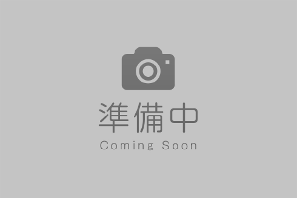
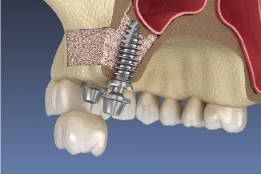
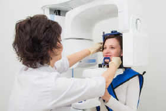
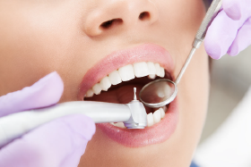
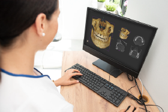
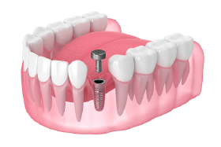
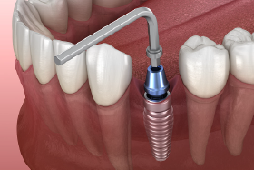
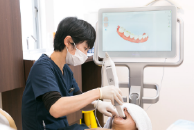
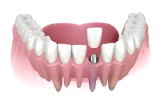
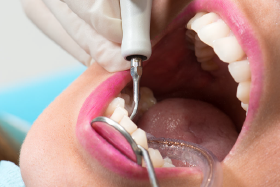

MERIT
インビザラインの特徴・メリット
インプラントのメリット
- 天然の歯のような噛み心地
- 天然の歯のような自然な見た目
- 周りの歯を削ったり、負担をかけたりしない
- ずれることがなく、しっかり噛める
- 適切なメンテナンスで、半永久的に使用できる
インプラントのデメリット・注意点
- 外科手術が必要
- 自費診療のため、比較的高額になる
- 治療期間が平均約3ヶ月～1年と長い
- 顎の骨の状態や持病によって
適用できない場合がある
SIMULATION
歯科用CTの3D撮影＆術前シミュレーション


FLOW
インプラント治療の流れ
STEP
1

STEP
2

STEP
3

STEP
4

STEP
5

STEP
6

STEP
7

STEP
8

Q&A
よくある質問
Q1
インプラント手術は痛いですか？
A1
手術中は、顎全体に効く伝達麻酔を使用するため痛みはほとんどありません。術後に麻酔が切れると痛みを感じる方もいますが、痛み止めを処方しますのでご安心ください。
手術後の腫れは、個人差がありますが2～3日後がピークとなり、１週間程度で引いていきます。
手術後の腫れは、個人差がありますが2～3日後がピークとなり、１週間程度で引いていきます。
Q2
インプラントは1度埋め込んだらずっと使えますか？
A2
インプラントの平均的な寿命は10～15年といわれていますが、実際には10年後も約90％以上が使用可能で、半永久的に使うことも不可能ではありません。
しかし、それには適切なメンテナンスとお口の健康が大前提です。
インプラントが使えなくなる最大の原因である「インプラント周囲炎」をはじめ、歯ぎしりや食いしばりによるダメージ、喫煙や糖尿病などの疾患による歯ぐきへの悪影響を定期検診で確認し、早めに対処していきましょう。
しかし、それには適切なメンテナンスとお口の健康が大前提です。
インプラントが使えなくなる最大の原因である「インプラント周囲炎」をはじめ、歯ぎしりや食いしばりによるダメージ、喫煙や糖尿病などの疾患による歯ぐきへの悪影響を定期検診で確認し、早めに対処していきましょう。
Q3
インプラントは保険適用になりますか？
A3
健康保険は適用されず、自由診療となります。
お支払いにはクレジットカード払いやデンタルローンもご利用可能です。
また、インプラント治療は医療費控除の対象になります。
費用やお支払いについては丁寧にご説明いたしますので、ご安心ください。
お支払いにはクレジットカード払いやデンタルローンもご利用可能です。
また、インプラント治療は医療費控除の対象になります。
費用やお支払いについては丁寧にご説明いたしますので、ご安心ください。
Copyright 2021 きらり歯科クリニック